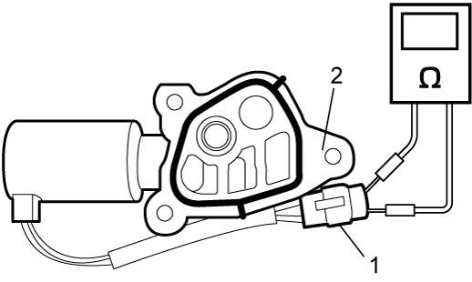
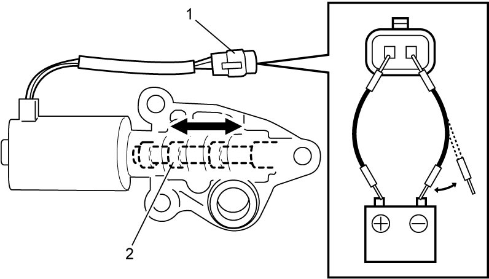

1C
| OCV Inspection |
1)Remove OCV. 
2)Check OCV as follows.
a)Check resistance between terminals of OCV connector (1).
If measured resistance is out of specified range, replace OCV (2).

If measured resistance is out of specified range, replace OCV (2).
OCV resistance
6.7 to 7.7 Ω at 20 °C (68 °F)

 "Expand image")
b)Connect battery to OCV connector (1) as shown in figure, and check operating sound caused by movement of spool valve (2).
If check result is not as specified, replace OCV.
If check result is not as specified, replace OCV.

 "Expand image")